Pintores
Controle de propostas, equipes, cronogramas e materiais por serviço.
Gestão inteligente para prestadores de serviço que atuam em campo.
Migre para um sistema totalmente automatizado, inteligente e simples, com um fluxo dinâmico para vender, executar e acompanhar serviços sem depender de controles quebrados.
Do orçamento ao financeiro, cada etapa conversa com a próxima para sua empresa parar de apagar incêndios e começar a operar com previsibilidade.
Pintura comercial
Instalação elétrica
Impermeabilização
Revestimento
Vistoria final
Medição aprovada
Próxima ação: confirmar equipe e materiais antes do início da obra.
Para todo tipo de prestador
O ObraFlux foi pensado para acompanhar diferentes modelos de operação, do atendimento ao cliente até a execução e o controle financeiro.
Controle de propostas, equipes, cronogramas e materiais por serviço.

Registro de etapas, insumos, medições e acompanhamento por obra.

Organização de demandas, ambientes, mão de obra e consumo de peças.

Planejamento de serviços técnicos, materiais e responsáveis por execução.

Um sistema flexível para empresas que precisam gerir múltiplas frentes, equipes, custos e entregas.
Do orçamento à entrega
O ObraFlux organiza as frentes que normalmente ficam espalhadas entre mensagens, planilhas e anotações.
Registre cliente, escopo, local e informações importantes para começar com clareza.
Organize equipe, materiais, etapas e previsões antes de colocar o time em campo.
Acompanhe status, etapas, responsáveis e histórico para reduzir ruídos na execução.
Preveja materiais, acompanhe consumo e enxergue custos com mais clareza.
Centralize receitas, despesas e informações importantes para decidir com segurança.
Veja andamento, custos e financeiro para manter a empresa no controle.
Módulos na prática
As telas abaixo mostram os principais módulos do sistema em uso: orçamento, equipe, obras, insumos e financeiro.
O módulo de orçamento centraliza dados do cliente, endereço, validade e composição do serviço para chegar ao total com mais segurança. Envie o PDF do orçamento diretamente ao cliente, formatado em modo retrato ou paisagem.

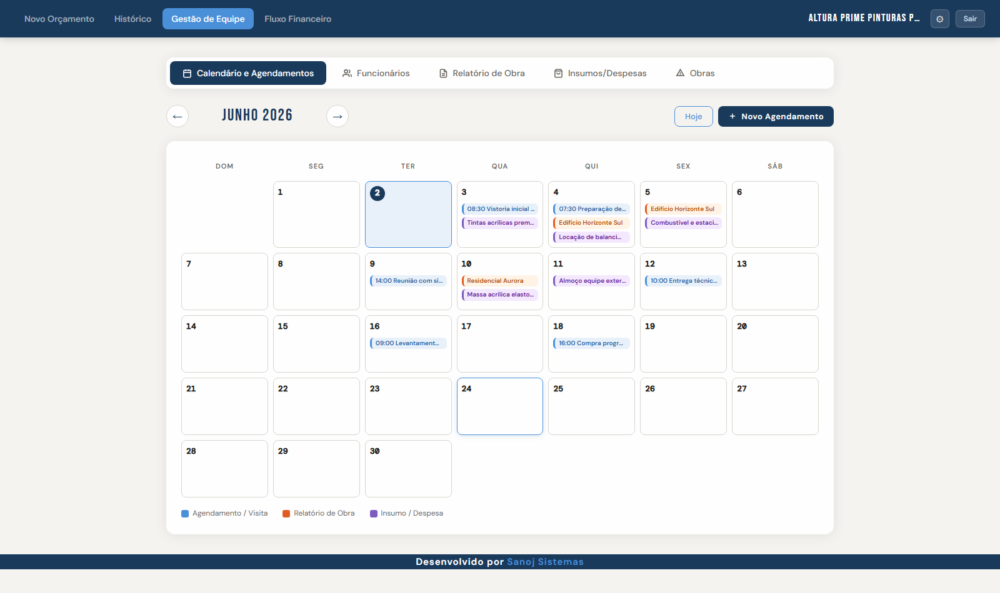
Organize visitas, entregas, compras e compromissos da equipe em uma visão simples de calendário.
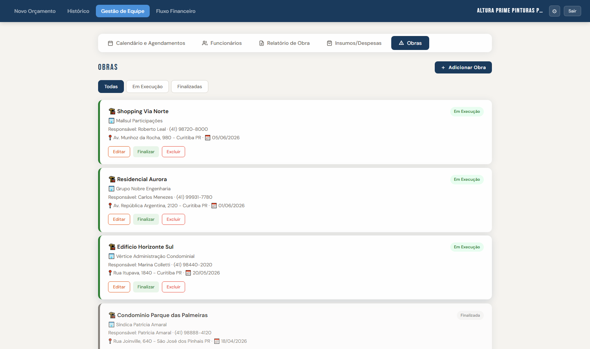
Acompanhe obras por status, cliente, responsável, endereço e data de início, mantendo cada frente bem localizada.
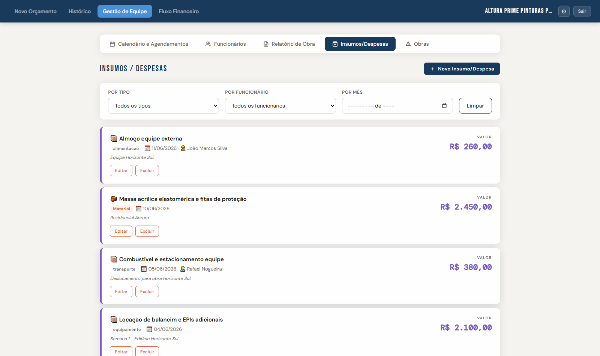
Registre materiais, alimentação, transporte, equipamentos e outros custos ligados à execução dos serviços. É possível enviar fotos de comprovantes, mantendo o controle e armazenamento desses dados para consulta posterior.
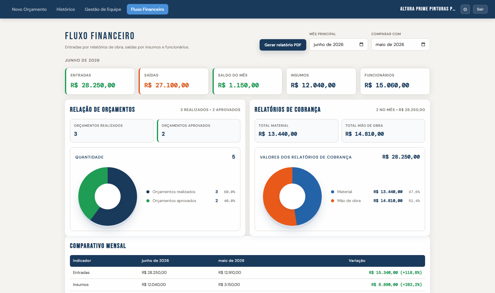
Veja entradas, saídas, saldo do mês, custos por insumos e relatórios de cobrança em painéis comparativos.
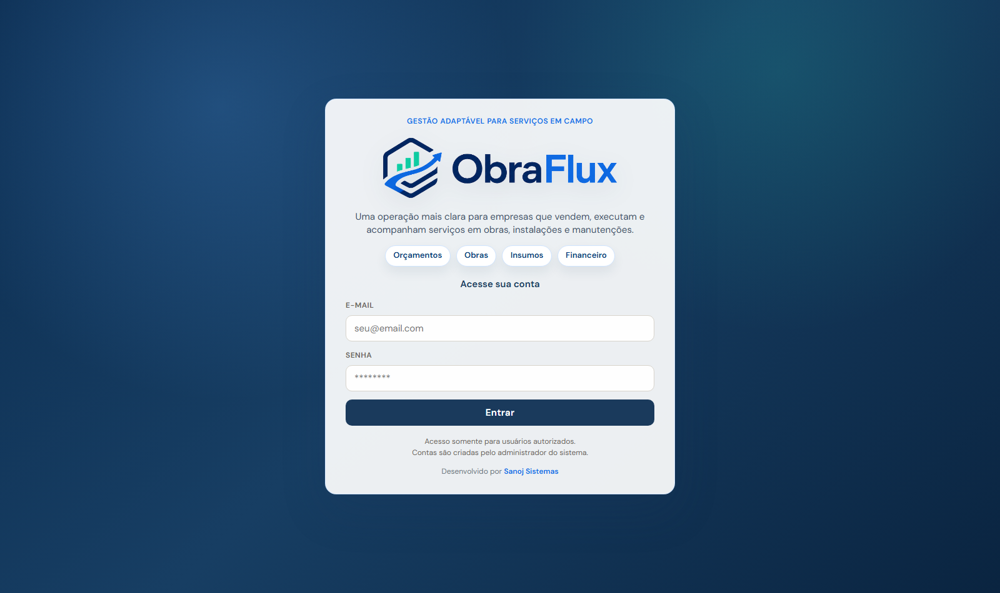
Tela de acesso dedicada para a equipe entrar no ambiente da empresa e trabalhar com os dados centralizados.
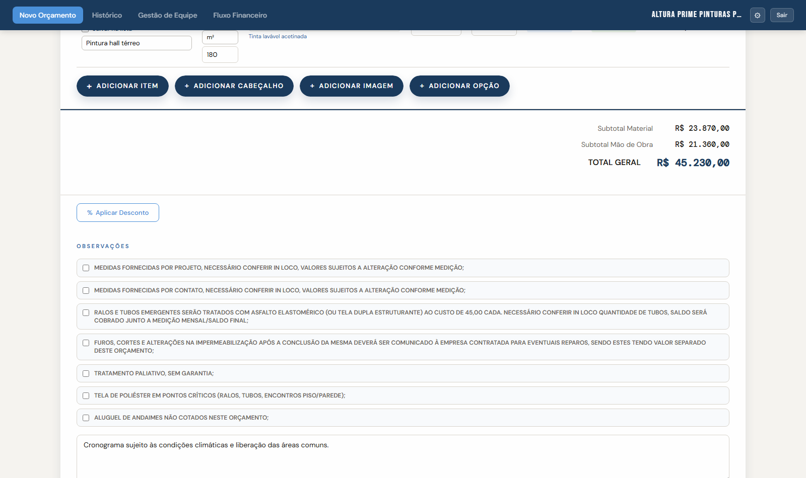
Acompanhe materiais, mão de obra e valores finais para fechar propostas com composição mais clara.
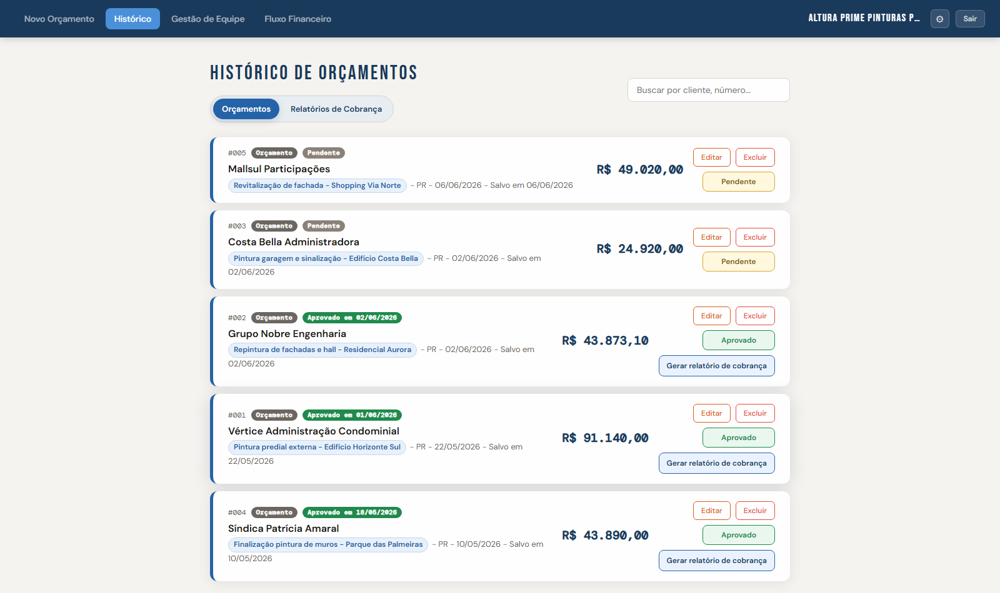
Consulte propostas anteriores, status, clientes e valores para retomar negociações sem perder contexto.
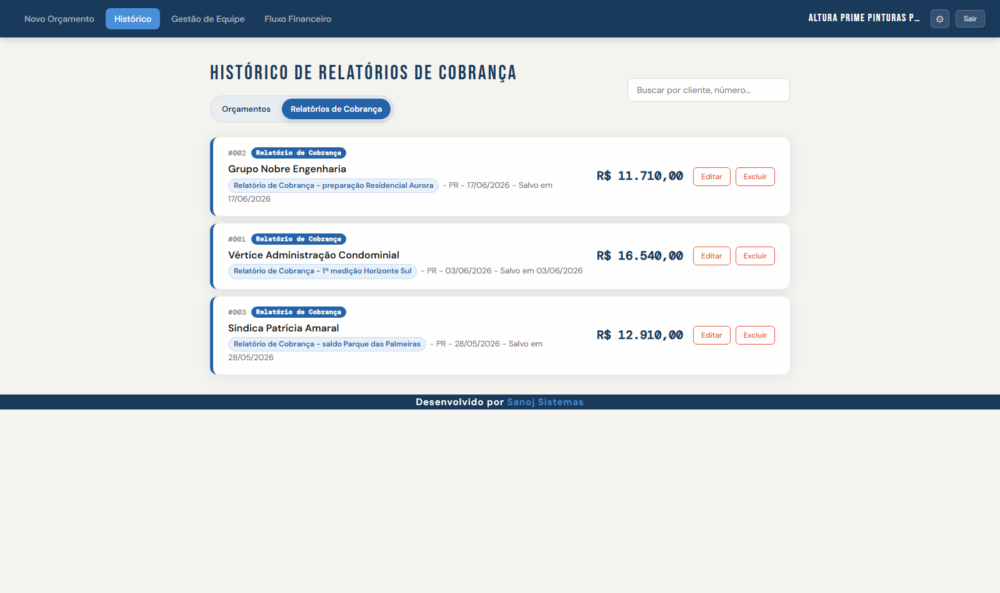
Controle medições e cobranças vinculadas aos serviços para acompanhar o que já foi enviado ao cliente.
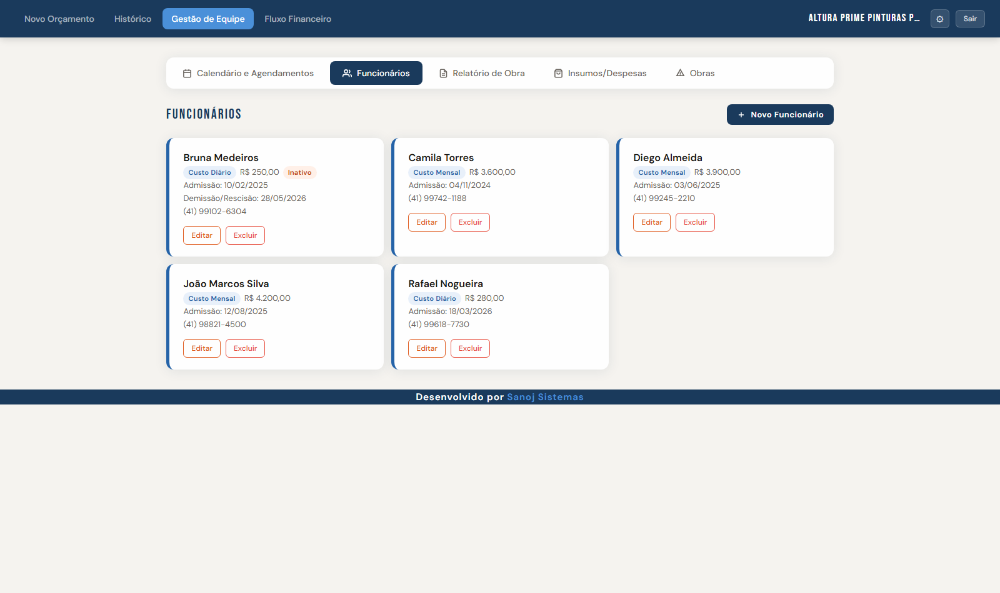
Mantenha os dados dos responsáveis organizados para relacionar pessoas a obras, relatórios e despesas.
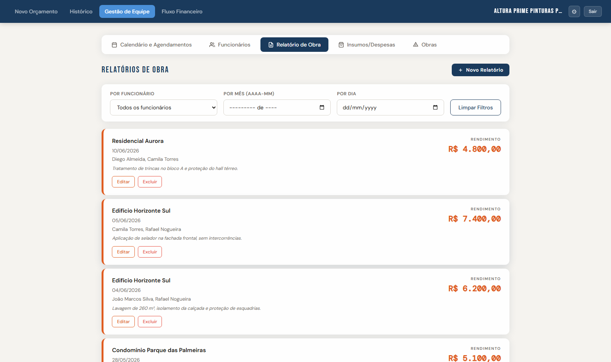
Documente atividades, avanços e informações relevantes para manter histórico confiável de cada obra.
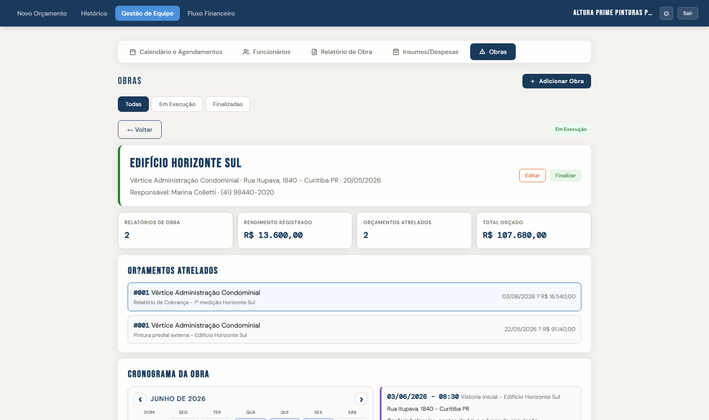
Veja orçamentos atrelados, cronograma, rendimento registrado e total orçado em uma visão de acompanhamento.
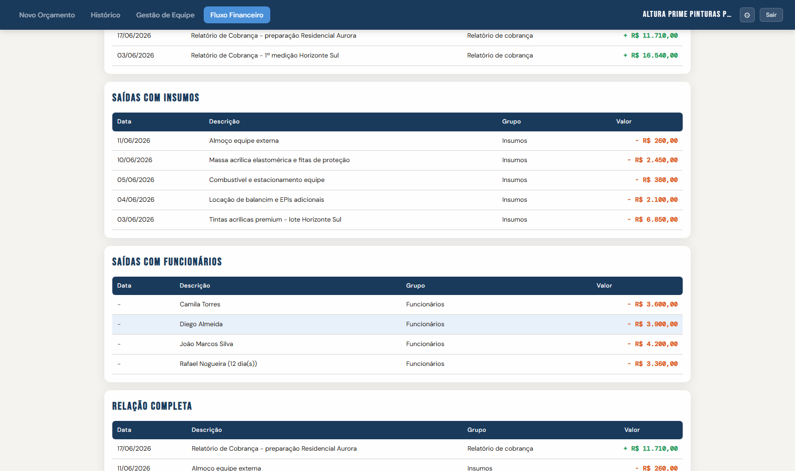
Compare entradas, saídas e variações financeiras, gere PDFs dos relatórios mensais com comparativos de outros meses e planeje sua gestão de forma mais eficiente.
Planos
Todos os planos podem ser contratados mensalmente ou anualmente. No anual, o desconto é de 10%.
Ideal para prestadores que querem sair das anotações soltas e centralizar o básico da operação.
Anual com 10%: R$808,92/ano
Feito para empresas que têm mais frentes em andamento e precisam acompanhar custos com mais clareza.
Anual com 10%: R$1.294,92/ano
Para quem quer conectar operação, custos e financeiro em um fluxo mais previsível.
Anual com 10%: R$1.618,92/ano
A migração de dados físicos ou de planilhas pode ser cotada junto na solicitação de apresentação do ObraFlux. Esse serviço é opcional e possui valores separados dos planos.
Faça a captação de clientes diretamente do seu site, integrando um módulo adicional no ObraFlux. Ideal para conversão direta de clientes, esse módulo facilita o contato e triagem com o cliente.
Pronto para crescer com controle
Solicite uma apresentação e veja como o ObraFlux pode se ajustar ao seu tipo de prestação de serviço.
Solicitar apresentação